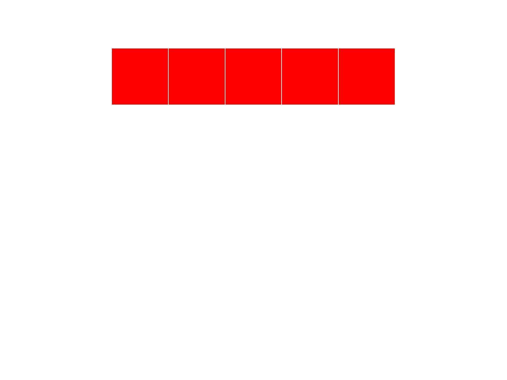

Vectors and Lists
Introducing vectors
In R, every variable is a vector. Think of a set of contiguous cells in a spreadsheet.
set.seed(1234)
e <- rnorm(100)
X1 <- 1:10Here, e is a vector with N values. X1 is the sequence of integers from 1 through 10.
Vectors can grow and shrink automatically. No need to move cells around on a sheet. No need to copy formulas or change named ranges.
Vector properties
- Every element in a vector must be the same type.
- R will change data types if they are not!
- Different types are possible by using a list or a data frame (later)
- Vectors have one dimension
- Higher dimensions are possible via matrices and arrays
- Possible to add metadata (like names) via attributes
Vector construction
Vectors are constructed in one of several ways:
- Return from a function or operation
seq,rep,sample,rnorm, etc.
- Concatenation
- Growth by assignment
seq
seq is used often to generate a sequence of values. The colon operator : is a shortcut for a sequence of integers.
pies = seq(from = 0, by = pi, length.out = 5)
i <- 1:5
year = 2000:2004rep
The rep function will replicate its input
i = rep(pi, 100)
head(i)## [1] 3.141593 3.141593 3.141593 3.141593 3.141593 3.141593Concatenation
The c() function will concatenate values.
i <- c(1, 2, 3, 4, 5)
j <- c(6, 7, 8, 9, 10)
k <- c(i, j)
l <- c(1:5, 6:10)
Growth by assignment
Assigning a value beyond a vectors limits will automatically grow the vector. Interim values are assigned NA.
i <- 1:10
i[30] = pi
i## [1] 1.000000 2.000000 3.000000 4.000000 5.000000 6.000000 7.000000
## [8] 8.000000 9.000000 10.000000 NA NA NA NA
## [15] NA NA NA NA NA NA NA
## [22] NA NA NA NA NA NA NA
## [29] NA 3.141593Vector access - by index
Vectors may be accessed by their numeric indices. Remember, ‘:’ is shorthand to generate a sequence.
set.seed(1234)
e <- rnorm(100)
e[1]## [1] -1.207066e[1:4]## [1] -1.2070657 0.2774292 1.0844412 -2.3456977e[c(1,3)]## [1] -1.207066 1.084441Vector access - logical access
Vectors may be accessed logically. This may be done by passing in a logical vector, or a logical expression.
i = 5:9
i[c(TRUE, FALSE, FALSE, FALSE, TRUE)]## [1] 5 9i[i > 7]## [1] 8 9b = i > 7
b## [1] FALSE FALSE FALSE TRUE TRUEi[b]## [1] 8 9which
The which function returns indices that match a logical expression.
i <- 11:20
which(i > 12)## [1] 3 4 5 6 7 8 9 10i[which(i > 12)]## [1] 13 14 15 16 17 18 19 20sample
The sample function will generate a random sample. Great to use for randomizing a vector.
months <- c("January", "February", "March", "April"
, "May", "June", "July", "August"
, "September", "October", "November", "December")
set.seed(1234)
mixedMonths <- sample(months)
head(mixedMonths)## [1] "February" "July" "November" "June" "October" "May"Get lots of months with the size parameter:
set.seed(1234)
lotsOfMonths <- sample(months, size = 100, replace = TRUE)
head(lotsOfMonths)## [1] "February" "August" "August" "August" "November" "August"sample II
Sample may also be used within the indexing of the vector itself:
set.seed(1234)
moreMonths <- months[sample(1:12, replace=TRUE, size=100)]
head(moreMonths)## [1] "February" "August" "August" "August" "November" "August"# Cleaner with sample.int
set.seed(1234)
evenMoreMonths <- months[sample.int(length(months), size=100, replace=TRUE)]
head(evenMoreMonths)## [1] "February" "August" "August" "August" "November" "August"order
The function order will return the indices of the vector in order.
set.seed(1234)
x <- sample(1:10)
x## [1] 2 6 5 8 9 4 1 7 10 3order(x)## [1] 7 1 10 6 3 2 8 4 5 9x[order(x)]## [1] 1 2 3 4 5 6 7 8 9 10Vector arithmetic
Vectors may be used in arithmetic operations.
B0 <- 5
B1 <- 1.5
set.seed(1234)
e <- rnorm(N, mean = 0, sd = 1)
X1 <- rep(seq(1,10),10)
Y <- B0 + B1 * X1 + eY is now a vector with length equal to the longest vector used in the calculation.
Question: B0 and B1 are vectors of length 1.
X1 and e are vectors of length 100.
How are they combined?
Recycling
R will “recycle” vectors until there are enough elements to perform an operation. Everything gets as “long” as the longest vector in the operation. For scalar operations on a vector this doesn’t involve any drama. Try the following code:
vector1 = 1:10
vector2 = 1:5
scalar = 3
print(vector1 + scalar)## [1] 4 5 6 7 8 9 10 11 12 13print(vector2 + scalar)## [1] 4 5 6 7 8print(vector1 + vector2)## [1] 2 4 6 8 10 7 9 11 13 15Set theory - Part I
The %in% operator will return a logical vector indicating whether or not an element of the first set is contained in the second set.
x <- 1:10
y <- 5:15
x %in% y## [1] FALSE FALSE FALSE FALSE TRUE TRUE TRUE TRUE TRUE TRUESet theory - Part II
unionintersectsetdiffsetequalis.element
?unionx <- 1900:1910
y <- 1905:1915
intersect(x, y)## [1] 1905 1906 1907 1908 1909 1910setdiff(x, y)## [1] 1900 1901 1902 1903 1904setequal(x, y)## [1] FALSEis.element(1941, y)## [1] FALSESummarization
Loads of functions take vector input and return scalar output. Translation of a large sest of numbers into a few, informative values is one of the cornerstones of statistics.
x = 1:50
sum(x)
mean(x)
max(x)
length(x)
var(x)Vectors
Vectors are like atoms. If you understand vectors- how to create them, how to manipulate them, how to access the elements, you’re well on your way to grasping how to handle other objects in R.
Vectors may combine to form molecules, but fundamentally, everything in R is a vector.
Exercise - Vectors
Create a vector of length 10, with years starting from 1980.
Create a vector with values from 1972 to 2012 in increments of four (1972, 1976, 1980, etc.)
Construct the following vectors (feel free to use the VectorQuestion.R script):
FirstName <- c("Richard", "James", "Ronald", "Ronald"
, "George", "William", "William", "George"
, "George", "Barack", "Barack")
LastName <- c("Nixon", "Carter", "Reagan", "Reagan"
, "Bush", "Clinton", "Clinton", "Bush"
, "Bush", "Obama", "Obama")
ElectionYear <- seq(1972, 2012, 4)- List the last names in alphabetical order
- List the years in order by first name.
- Create a vector of years when someone named “George” was elected.
- How many Georges were elected before 1996?
- Generate a random sample of 100 presidents.
Answer
LastName[order(LastName)]## [1] "Bush" "Bush" "Bush" "Carter" "Clinton" "Clinton" "Nixon"
## [8] "Obama" "Obama" "Reagan" "Reagan"ElectionYear[order(FirstName)]## [1] 2008 2012 1988 2000 2004 1976 1972 1980 1984 1992 1996ElectionYear[FirstName == 'George']## [1] 1988 2000 2004myLogical <- (FirstName == 'George') & (ElectionYear < 1996)
length(which(myLogical))## [1] 1sum(myLogical)## [1] 1sample(LastName, 100, replace = TRUE)## [1] "Bush" "Clinton" "Reagan" "Obama" "Reagan" "Obama" "Reagan"
## [8] "Reagan" "Reagan" "Reagan" "Reagan" "Reagan" "Carter" "Nixon"
## [15] "Reagan" "Bush" "Clinton" "Obama" "Obama" "Nixon" "Clinton"
## [22] "Reagan" "Reagan" "Clinton" "Carter" "Bush" "Reagan" "Reagan"
## [29] "Obama" "Bush" "Clinton" "Bush" "Reagan" "Clinton" "Reagan"
## [36] "Clinton" "Bush" "Clinton" "Reagan" "Bush" "Nixon" "Reagan"
## [43] "Bush" "Clinton" "Carter" "Clinton" "Clinton" "Bush" "Carter"
## [50] "Obama" "Obama" "Nixon" "Reagan" "Nixon" "Reagan" "Bush"
## [57] "Reagan" "Clinton" "Nixon" "Clinton" "Carter" "Obama" "Nixon"
## [64] "Bush" "Nixon" "Clinton" "Bush" "Nixon" "Reagan" "Bush"
## [71] "Obama" "Clinton" "Carter" "Clinton" "Reagan" "Obama" "Bush"
## [78] "Reagan" "Carter" "Obama" "Carter" "Obama" "Carter" "Carter"
## [85] "Carter" "Clinton" "Reagan" "Nixon" "Reagan" "Bush" "Nixon"
## [92] "Clinton" "Reagan" "Reagan" "Carter" "Reagan" "Carter" "Carter"
## [99] "Bush" "Nixon"Lists
Lists have data of arbitrary complexity. Any type, any length. Note the new [[ ]] double bracket operator.
x <- list()
typeof(x)## [1] "list"x[[1]] <- c("Hello", "there", "this", "is", "a", "list")
x[[2]] <- c(pi, exp(1))
summary(x)## Length Class Mode
## [1,] 6 -none- character
## [2,] 2 -none- numericstr(x)## List of 2
## $ : chr [1:6] "Hello" "there" "this" "is" ...
## $ : num [1:2] 3.14 2.72Lists
[ vs. [[
[ is (almost always) used to set and return an element of the same type as the containing object.
[[ is used to set and return an element of the same type as the contained object.
This is why we use [[ to set an item in a list.
Don’t worry if this doesn’t make sense yet. It’s difficult for most R programmers.
Recursive storage
Lists can contain other lists as elements.
y <- list()
y[[1]] <- "Lou Reed"
y[[2]] <- 45
x[[3]] <- y
List metadata
Again, typically names. However, these become very important for lists. Names are handled with the special $ operator. $ permits access to a single element. (A single element of a list can be a vector!)
y[[1]] <- c("Lou Reed", "Patti Smith")
y[[2]] <- c(45, 63)
names(y) <- c("Artist", "Age")
y$Artist## [1] "Lou Reed" "Patti Smith"y$Age## [1] 45 63lapply
lapply is one of many functions which may be applied to lists. Can be difficult at first, but very powerful. Applies the same function to each element of a list.
myList <- list(firstVector = c(1:10)
, secondVector = c(89, 56, 84, 298, 56)
, thirdVector = c(7,3,5,6,2,4,2))
lapply(myList, mean)## $firstVector
## [1] 5.5
##
## $secondVector
## [1] 116.6
##
## $thirdVector
## [1] 4.142857lapply(myList, median)## $firstVector
## [1] 5.5
##
## $secondVector
## [1] 84
##
## $thirdVector
## [1] 4lapply(myList, sum)## $firstVector
## [1] 55
##
## $secondVector
## [1] 583
##
## $thirdVector
## [1] 29Why lapply?
Two reasons:
- It’s expressive. A loop is a lot of code which does little to clarify intent.
lapplyindicates that we want to apply the same function to each element of a list. Think of a formula that exists as a column in a spreadsheet. - It’s easier to type at an interactive console. In its very early days,
Swas fully interactive. Typing aforloop at the console is a tedius and unnecessary task.
Summary functions
Because lists are arbitrary, we can’t expect functions like sum or mean to work. Use lapply to summarize particular list elements.
List Questions
- Create a list with two elements. Have the first element be a vector with 100 numbers. Have the second element be a vector with 100 dates. Give your list the names: “Claim” and “AccidentDate”.
- What is the average value of a claim?
Answers
myList <- list()
myList$Claims <- rlnorm(100, log(10000))
myList$AccidentDate <- sample(seq.Date(as.Date('2000-01-01'), as.Date('2009-12-31'), length.out = 1000), 100)
mean(myList$Claims)## [1] 18004.31